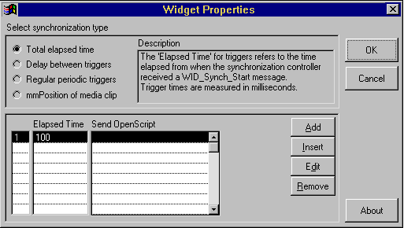
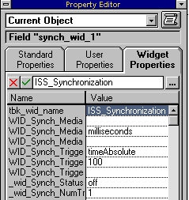

Australian Toolbook User Group


Synchronising graphics and sound, in most cases is pretty simple. If you need strict synchronisation, you should consider creating creating and playing an AVI or Quicktime video.
How do I play a sound clip and display several image files one after another? Solution by Stephen Hunter
Question: How do I play a sound clip and display several image files one after another while the sound is playing? Can I control the timing and duration of the images on the screen? I am sorry to ask this but the Ref manuals have little or no examples
Answer: Regarding "How do I play a sound clip": use the mmplay command as usual. Then in an idle handler structure, test the mmposition property of the clip, e.g. if you want to show an image after 4 seconds for 1 second duration
if mmposition of clip myClip > 4000 visible of picture "mypic1" = false visible of picture "mypic2" = true if mmposition of clip myClip > 5000 visible of picture "mypic" = false
Text and Sound Synchronisation Solution by John Petrikovitsch
Question: I am a novice. I got MTB30 a few weeks ago. I am basically asking how to go about doing the following. What I want to do is display the sentence "This is my first try" one word at a time and play a wav file recording of the same entence as it plays the recorded words in sync with the displaying words. I have tried the following 2 scenarios withminimum success.
1. Created a single text field with the sentence and used a script to select each word and change the stroke color with a pause after each word selection. This >handles the display. I then tried to mmplay each words particular range in the wave file as each word displayed.this was quite time consumming and I never could get the entire sentence to play smoothly.
2. Made the sentence "This is my first try" 5 separate text fields and made 5 separate wav files 1 for each word.I then made a script to highlight and play each wav for eachword. As you can imagine this was even worse.I know this can be done I just do not know how yet. Any suggestions would be appreciated.
Answer:
I have tried something similar with an automated presentation which highlights bullets as a sound clip of the instructor is playing.
I have a variable (clipReference) which contains the name of the sound clip, the starting time, the time when I want the highlight to change and the ending time of the clip - all in ms. (note: the itemcount of this list the number of points (or words in your case) + 2 for the clip name and ending time).
I then have the following script in the field:
notifybefore idle
system clipReference
get mmposition of clip \
(item 1 of clipReference)
--item 1 is name
set pointnumber to \
itemcount(clipReference)-2
set i to 0
while it>(item i+2 of clipReference) \
AND i<pointnumber
increment i
end
if i>0 AND i<>my currentpoint then
send highlightpoint i
end if
end
to handle highlightpoint i
... (you must use your own code here)
In the highlightpoint section, you must change the
strokecolor of word i
to the highlight color, and change the
stroke color of word i-1
back to the original color if i<>1. Also when you use mmplay to start the sound file, you must notify the field when the clip is done so it can un-highlight the last word.
This works great, because it does not interrupt the playing of the soundclip.
Wavefile Control of Animations Solution by Jeff Parkes
I wanted to make animations in Toolbook that synchronised with wave files. To use the following technique, you need to precisely determine the start and end points of a portion of sound in a wave file portion, so as to put these values in the script together with animation control statements (see below).
-- THE LearnTech
-- IDLE HANDLER STUFF FOR
-- WAVEFILE CONTROL OF ANIMATIONS
-- by Jeff Parkes
to handle idle
forward
system playnow
if playnow is yes
set playnow to no
get tbkMCIchk("play waveFile from" && \
0 && "to" && 19100,"",1)
get yieldApp()
end
--this plays the wavefile for this page once
--it is completely drawn and ready
--to go
--this finds out where the wavefile is up to and...
get tbkMCI("status waveFile position","")
--the conditions determine when the
--various thingies get shown
conditions
when it > 2800 and it < 3300
hide group "music"
--by specifying a "window of opportunity"
--this wide, it's reasonably certain
--that even a very slow computer will
--catch the wavefile position within one
--loop of the idle handler, while a super
--fast one is unlikely to try to do it
--twice. Showing something twice
--wouldn't have been a problem here but in
--some circumstances it could mean things
--remain on screen when they
--shouldn't. Also, where the idle handler
--changes the bounds of an object, it
--could keep going right off the screen.
when it > 9500 and it < 11000
hide field "brew"
show group "bucket"
when it > 13700 and it < 14200
show group "driller"
when it > 17400 and it < 17900
hide group "driller"
show ellipse "grommet"
when it > 18500 and it < 18900
show group "bubbler"
when it > 18800
send showbutts
--shows the navigation button to continue
--the "exit" button is always available
end
--this makes the chuck of the drill appear to turn
set transparent of line "w1" to false
set transparent of line "w1" to true
set transparent of line "w2" to false
set transparent of line "w2" to true
set transparent of line "w3" to false
set transparent of line "w3" to true
end
As a voice over plays a wave file, the animation keeps in perfect synch with the audio.
 An alternative to the wavefile gadget
An alternative to the wavefile gadget
Use the clip editor to define the clips into the wave file - then read the values that define those clips out of the clip manager. Put these values in your code.
Playing sound with bitmaps at given intervals Solution by John R. Hall
Question: Does anybody have some script code to play a wave file and at the same time play some bitmaps at specified times. I also need to be able to show no bitmaps at certain points, i.e., the screen has to be blanck during certain parts of the voice over when no graphics are needed.
-- Also see openscript help about mmNotify, which is more appropriate if you have separate clips
-- rather than one long clip.
-- Here's a script I use to display
-- bitmaps timed to a long clip. You
-- might be able to modify to accomplish
-- what you want. It will
-- also work with video playback
-- with slight modification.
-- In page script, put info needed
-- for whole page. Something like:
to handle enterpage
system stack popList
system string ClipName
forward
-- create a list of audio frame numbers
-- where you want events to happen.
-- You can get these numbers by playing the
-- clip in the clip
-- manager and writing down the current
-- frame when you stop the
-- clip at the point you want to display
-- the next bitmap.
-- popList is then created with the form
-- FrameNumber,ObjectToDisplay
poplist = "1,FieldOne,1200,FieldTwo"
-- identify the name of the clip for the page
ClipName = "myWave"
-- identify the format you're going to use
mmTimeFormat of clip "myWave" = "milliseconds"
end
-- Now, you use the following generic
-- handler for every page.
-- The script can be located in a
-- button, page, whatever.
to handle PlayTheSegs -- or FirstIdle or buttonclick
system stack popList
system string ClipName
mmplay clip ClipName
-- pop list of clips and times to show from stack
do
pop popList
StartTime = it
pop popList
ObjectToShow = it
get ShowObject(StartTime,ObjectToShow)
until popList = null
-- wait for last section of clip to finish
do
if keyState(sysMediaBreakKey) is "up"
get flushMessageQueue()
mmyield
end
until mmstatus of clip ClipName <> "playing"
-- continue processing for the page
request "I'm done"
end
to get ShowObject StartTime,ObjectToShow
system string ClipName
do
if keyState(sysMediaBreakKey) is "up"
get flushMessageQueue()
end
mmyield
until mmposition of clip ClipName > StartTime
-- if you use other object types, modify next line
-- or include object info in original
-- stack named popList
show field ObjectToShow
return "OK"
end
Karaoke - like book
Question: I'm doing a book that needs to synchronize CD audio with the lyrics of the current track played. How do I do this ?
Why not begin with a list of time changes:
to handle enterPage
system TimeChanges, Lyrics, Current
set Current to 1
put item 1 of Lyrics into text \
of field "Lyrics"
--play your cd here
TimerStart(single,item 1 of TimeChanges, \
200, self)
end
Start your audio, show your first lot of lyrics in your one field and grab the first time change with which you set a timer which in turn will clear the old text and put the next lot of lyrics into your field, then set the timer for the next change.
to handle TimerNotify
system TimeChanges, Lyrics, Current
set text of field "Lyrics" to \
item current of Lyrics
increment Current
TimerStart(single,item Current \
of TimeChanges,200,self)
end
If the user wants to leave the page just send a timerstop and kill the current lyrics before you leave.
I've not done this with cd audio, but I've synchronized scrolling a text field to match a video. I think, whether you use clips, or straight MCI commands, the key is to realize that you can find out the position of the audio (or video) as it is being played. With audio, you probably will use milliseconds. So, what you'll need to do is decide how you are presenting the lyrics. You could, simply, create a number of different pages, with the lyrics spread across these pages. Dividing up the lyrics would be based on the natural phrasing of the songs. Then, you would manually go through the audio cd and obtain the necessary information for the start of each new phrase. What I mean is this: if you're using milliseconds as the timing basis, then you would determine that phrase 1 should be shown while the position of the audio is between 0 and 20 ms; phrase 2: between 21 and 40, etc.
Another approach (much more efficient): store the text to be displayed in an array and then display this text in a single field on a single page as the audio is played. You would use a timer to periodically check the status of the cdaudio's position.
Using a timer in animation Solution by Michael McKinnon.
In OpenScript, Asymetrix has managed to incorporate some commands, which although they appear to be OpenScript commands, are actually functions from the Windows system. The commands which I will demonstrate here are the timerStart and timerStop functions. These functions allow you to either start a virtual alarm clock which can go off after a preset amount of time, or have a metronome effect, triggering an event periodically.
When it comes to ‘cel’ animation, most people are inclined to use a step loop to control the hiding and showing of the separate cels, but this has a number of disadvantages as follows:
• The speed of the animation will change on different types of machines. i.e. a Pentium vs. an older 386 machine. Even on the same machine, the time it takes for a step loop to complete may change dependent on the resource loads at the time.
• A step loop uses valuable CPU time, which could be employed doing other tasks, such as waiting for the user to stop the animation.
• It can take a considerable amount of time trying to guess exactly how many times the loop must iterate. This often means switching between author and reader mode several times, just to change one number in a script.
When you start to use Windows timers, people will start calling you a real Windows programmer. The timer will be precise on almost any machine, it doesn’t waste valuable CPU time, and you need only make a few adjustments to know what the results will be.
So, now that you’re convinced that the Windows timer is the way to go, maybe you should check out your "Multimedia ToolBook User Manual and OpenScript Reference" under section 10-48 and 10-49, or consult the Help file by searching for ‘timerStart’.
As you can see, the commands are reasonably straight forward. The only other thing you must know is that the notify object which receives the timer message intercepts it with a "timerNotify" handler, and this is where the action happens.
First you’ll need Some animation ‘cels’. Usually in the form of imported bitmaps. They should all be the same size, named in sequence PaintObject "1","2","3" etc. and then grouped. You should make sure that they are all aligned to sit on top of each other (use the Tools menu to align them easily).
Using my script, you’ll need to set two user properties on the group, by using the Property browser. Call the first property CurrentFrame and give it a value of ‘1’, then call the second property FrameCount and give it a value equal to the number of cel PaintObjects you have in the group and add one. (So, if you have six cels, give the FrameCount property a value of seven.)
Next, you’ll need a script on the group to control the animation. You can place the script higher in the book if you have animations on several pages, and in Multimedia ToolBook 4.0 you might even like to use the SharedScript feature.
Next, you’ll want to test the animation to see if it works. Let‘s assume that I called the group of cels ‘logo’. To start the animation, all I have to do (from the command Window in author mode, or in script at runtime) is to issue the command send animate "start" to group "logo".
When the animation has started, it will continue to run, regardless of whether you switch between reader and author mode. Do you know why? It’s because the Windows timer event which we have started is doing all the work for us!
As you can clearly see, there are many advantages to running animations in this way. You can use the Windows timer for a number of tasks, and these are limited only by your imagination. Here are some of my suggestions:
• A splash screen at the start of your application. By using a timer, you could show a viewer with some credits or disclaimer information for, say 2 seconds.
• On a kiosk application, you might want to perform a demonstration routine if the kiosk hasn’t been touched for, say 5 minutes. All you would do is catch the first idle and start a timer for 5 minutes. If someone comes back before then, you stop the timer and start it again when you catch the first idle. When the timer does elapse your application can start its demonstration.
• For CBT applications you can easily use a single timer to lock out a question if it hasn’t been answered in the correct amount of time.
• If you produce any applications that provide network functionality, you can use the timer to keep polling the other application to test if it is still alive. The periodic nature of the timer makes it an ideal heartbeat for all types of tasks.
-- NOTE: The cel animation that I use
-- consists of the real frames, plus the last one
-- which is always on the background image,
-- and which can't be shown or hidden.
-- I call it the "dummy" frame.
to handle TimerNotify
-- variable declaration
local INT vFrameCount, vCurrentFrame, vNewFrame
-- number of paintObjects
vFrameCount = my FrameCount
-- current frame number
vCurrentFrame = my CurrentFrame
-- calculate newframe
vNewFrame = vCurrentFrame mod vFrameCount + 1
-- lock the screen
syslockscreen = true
if vNewFrame <> vFrameCount then
-- show next frame (if not dummy)
show paintobject vNewFrame of self
end if
if vCurrentFrame <> vFrameCount then
-- hide last frame (cant hide dummy)
hide paintobject vCurrentFrame of self
end if
-- unlock the screen
syslockscreen = false
-- update current frame for next time
my CurrentFrame = vNewFrame
end
------------------------------------------
-- ANIMATE (START OR STOP) MJM 01/02/96
------------------------------------------
-- This handler is called when the cel
-- animation in this group is requested to
-- start. it then starts a Windows
-- timer to initialise the animation event. The
-- timerNotify handler will control the rest,
-- as long as the timer is going.
--
to handle animate switch
-- Check for the switch passed to the handler
if switch = "start" then
-- If the object already has a
-- TimerID, don’t start!
if my TimerID is NULL then
-- Set my TimerID by starting a Windows Timer
my TimerID = \
timerStart(periodic,100,1000,target)
-- Check for a problem with the TimerStart command.
if my TimerID is NULL then
-- Show what went wrong.
request "Timer Start"&CRLF&"ERROR:"& \
syserror
end if
else
-- If this group object already had a TimerID, then
-- it is preferable to stop it, if for some reason
-- we have tried to start another one.
-- This is a safeguard
-- when used in a MouseEnter/Leave
-- situation where you
-- might be switching between reader/author
-- mode, and where
-- the MouseLeave may not be sent.
send animate "stop" to self
end if
else
–- "Stop" (or something else) has been called.
if my TimerID is not NULL
get TimerStop(my TimerID)
if it is NULL then
-- Tell the user why we couldn’t stop the thing.
request "Timer Stop"&CRLF&"ERROR:" & \
syserror
else
-- get rid of the TimerID user property
clear my TimerID
-- reset all the animation cels to the start point
send resetcels to self
end if
end if
end if
end
-------------------------------------
-- SHOWCELS MJM 01/02/96
-------------------------------------
-- I keep this in the script so I can
-- call it to show all the cels if I
-- need to move any of them around.
--
to handle showcels
step i from 1 to \
ItemCount(my objects)
show (item i of my objects)
end step
end
------------------------------------------
-- RESETCELS MJM 01/02/96
------------------------------------------
-- The animation must be reset so as
-- to hide all the
-- cels and only leave the background ("dummy")
-- image present. In theory, I am simply hiding the
-- last current frame and showing the
-- "dummy" frame.
--
to handle resetcels
-- variable declaration
local vCurrentFrame, vFrameCount
vFrameCount = my FrameCount -- number of frames
vCurrentFrame = my CurrentFrame -- current frame
-- check if we are already
-- showing the "dummy" frame.
if vCurrentFrame <> vFrameCount then
-- hide last frame (not dummy)
hide paintobject vCurrentFrame of target
end if
-- reset currentFrame to dummy
my CurrentFrame = vFrameCount
end
Using the Toolbook freeware Synchronization Plug-In Utility Solution by Tony Domigan
As a developer, you invariably write nifty routines to make programming tasks easier. These utilities are rarely shared with others because of the effort required to make them bug-free and intuitive for others to use.
At the last meeting I discussed a utility from Slade Mitchell called the Synchronization Plug-In. I was surprised that this utility was virtually unknown so I thought I might describe this utility here as I believe that it can provide a useful and simple interface for handling timer functions.
The SYNCH system book was written by Slade Mitchell (smitchel@wat.hookup.net) and can be obtained from
http://www.hookup.net/~smitchel
From his site you can download a version for MTBCBT3, 4 and 5. Slade invites you to register on his web site so that you can be informed of changes.
The SYNCH package contains:
• SYNCHXX.SPB the widget editor which you move to your MTBCBT widget directory
• SYNCHXX.SBK the widget handler which you push onto sysbooks on enterApplication
• SYNCHXX.TBK an example toolbook and a sample wave file used by the toolbook.
Additionally, you can download documentation from Slade’s web site.
The SYNCH system book supports the management of synchronization widgets. To begin to use the utility you push the sbk onto sysbooks in your enterApplication handler (you do not add it to your preferences sysbooks).
Once you have started the toolbook with the SYNCH sbk loaded you can choose any object from the tools palette and from the command prompt issue the synch_make handler to define the object as a synchronization controller widget. E.g.
send WID_Synch_MakeWidget to \ OBJECT "objectname" of this page
If you examine the new widget using the property editor you will see that there have been new widget user properties added as follows:


The synch sbk will also make changes to the script of the object to add a basic handling template which you customise to invoke your routine when the timing function is triggered.
Having defined the object as a widget you can then invoke the CBT widget properties editor for the new widget to establish the synchronization type and parameters to use for the widget.
There are 4 synchronization (timer) types handled by the widget:
You first select which of these modes you want to use. The first three modes all use trigger points measured in milliseconds. The mediaClip mode also allows you to choose frames if you are trying to synchronize to a video clip.
Once you have defined the type and parameters for the synchronization controller you modify the trigger handler template which was automatically added to the script of the object.
to handle WID_Synch_EventTriggered pTriggerIndex
conditions
when pTriggerIndex = 1
-- add an action
show field "prompt1"
end conditions
end WID_Synch_EventTriggered
The widget is controlled by 2 messages:
WID_Synch_Start WID_Synch_Stop
All that needs to be done now is to start the trigger in your program e.g.
send WID_Synch_Start to OBJECT "objectname"
When the timer completes the trigger will be sent to the object EventTriggered handler where your custom actions will be activated.
Timers are relatively easy to use but you do need to be vigilant when using them as a mistake could lead to a fatal Windows error. Slade’s Synchronization plug-in provides a simple to use and robust interface to timer functions.
The Synchronization Plug-In system books (SYNCH30.SBK, SYNCH40.SBK, SYNCH50.SBK) can be freely used and distributed by anyone as part of ToolBook development projects as long as the following acknowledgement appears in the book script of your application:
"Portions of this application are the copyright of Interactive Software Solutions". "Portions of the code are the copyright of Asymetrix Corporation"
I recommend you give this plug-in a try.
To access thousands more tips offline - download Toolbook Knowledge Nuggets